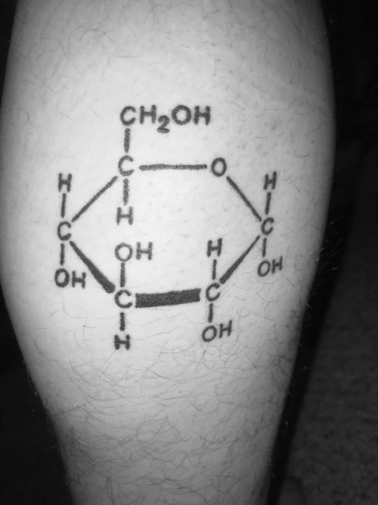

The chemical structure
of glucose
TATTOO TWO
Name - Griffin Stewart Teil
Tattoo and placement - Structure of Glucose on the back of the calf.
How old are you? - 20 years old.
How old were you when you got this tattoo? - 18 years old.
How many tattoos do you have in total? - 11
How much did it cost you? - $150
Where did you get it done? - Queen of hearts tattoo, Minneapolis.
How long did it take? - 30 minutes.
How impulsive was it? - I was thinking of art for a few months, the idea was stewing around a bit.
Does this tattoo have a meaning behind it? - It’s meant to be a joke as I’m type one diabetic and it’s the symbol for glucose.
Is it your own artwork? - No.
BACK BACK BACK BACK BACK BACK BACK BACK
